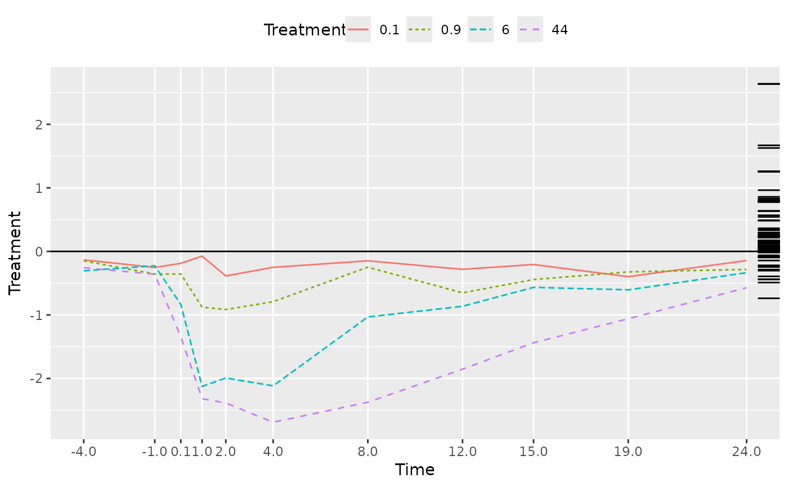

"prc"autoplot.prc.RdProduces a multi-layer ggplot object representing the output of
objects produced by prc.
# S3 method for prc autoplot( object, select, xlab, ylab, title = NULL, subtitle = NULL, caption = NULL, legend.position = "top", ... )
| object | an object inheriting from class |
|---|---|
| select | a logical vector where |
| xlab | character; label for the x-axis |
| ylab | character; label for the y-axis |
| title | character; subtitle for the plot |
| subtitle | character; subtitle for the plot |
| caption | character; caption for the plot |
| legend.position | character; position for the legend grob. See argument
|
| ... | Additional arguments passed to |
Returns a ggplot object.
TODO
data(pyrifos) week <- gl(11, 12, labels=c(-4, -1, 0.1, 1, 2, 4, 8, 12, 15, 19, 24)) dose <- factor(rep(c(0.1, 0, 0, 0.9, 0, 44, 6, 0.1, 44, 0.9, 0, 6), 11)) ## Fit PRC model mod <- prc(pyrifos, dose, week) ## plot want <- colSums(pyrifos) autoplot(mod, select = want)